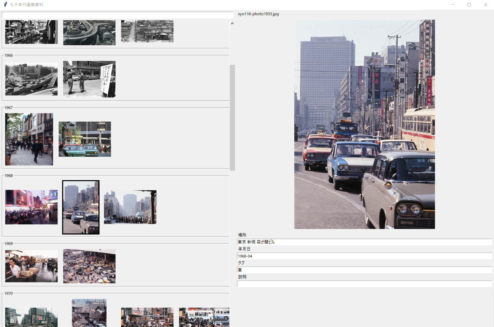

資料画像を軽く整理するツール

目的
Scrapbox主体で貯めている60-70年代の国内の様子について、画像のリンク切れや集積の難しさの問題があり、
またローカルではエクスプローラーのファイル分けと既存のタグつけツールの煩雑さの問題もあったため、
両者を回避したツールを制作したかった。
また今年のIdeoavesではpython強化年としていたため、json + python(tkinter)で制作した。
実際に作ってみてかなり情報をまとめやすくなった。またjsonを直に編集することで想定よりもタグ付けのストレスが減った。
既存ツールの問題点
タグやフラッグといった機能が多く過剰。起動毎に画像を読み込む時間がかかる。
メタデータ情報はそのままデータベースとするには取り出しにくく、扱う画像の大半がネット上のもののためメタデータの価値がない。
欲しかった機能
撮影された時期を重視するため時系列順に並ぶ。
・出典に記載されている時間は欠落する場合があるため、年、年月だけが書かれていてもソートできるようにする。
・昭和の画像のみを集めるため、簡易的な計算で西暦と元号を両方入力可能。
タグ検索ができる。また、タグは容易に書き換えられる。
今後欲しい機能
場所の解像度がまちまちなため、既存の住所データを用いて大きな範囲での検索を可能にしたい。
地図にオーバーレイし、画像の表示をグリッドではなく場所で一致させる。タイムラインウィンドウ（現状）とマッピングウィンドウをそれぞれ用意する。